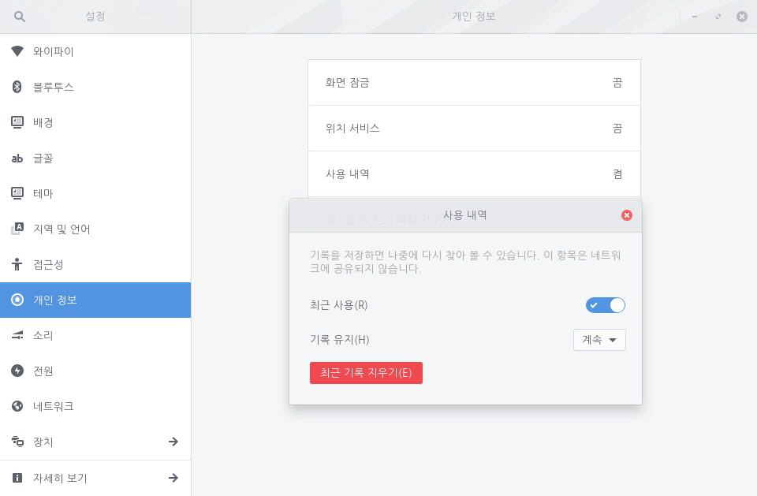

최근 사용한 파일 및 폴더를 추적하는 기능을 사용하면 파일 관리자의 [최근] 탭에 표시되기 때문에 원하는 항목을 쉽게 찾을 수 있습니다. 기록 유지 여부를 설정하거나 특정 기간에 사용한 파일이나 폴더만 추적할 수도 있습니다. 다음 단계를 수행하여 사용 내역 추적을 설정합니다.1. 좌측 하단의 [시작]아이콘을 클릭하고 검색 창에 "설정"을 입력한 후 [설정] 애플리케이션을 실행합니다.
 2. [설정] 애플리케이션 사이드 바에서 [개인 정보]를 클릭한 후 [사용 내역]을 클릭합니다.
2. [설정] 애플리케이션 사이드 바에서 [개인 정보]를 클릭한 후 [사용 내역]을 클릭합니다.
3. [최근 사용] 설정 단추를 오른쪽으로 밀어 켭니다. [기록 유지]에서 며칠 전까지 파일을 추적할 것인지 설정할 수 있습니다. 최소 1일부터 최대 30일까지 가능하며, [계속]으로 설정한 경우 사용자가 지우지 않는 한 해당 기록이 계속해서 남아있습니다.[최근 기록 지우기] 단추를 클릭하면 사용자가 직접 최근 사용 내역을 지울 수 있습니다.